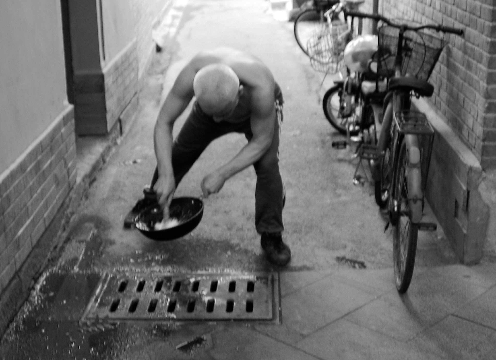

humans.txt
robots.txt
.css and .html
Why is it important to seperate the layout and design (css) from content (html)? One of the reasons is to avoid confusing the purpose of their usage. Htlm should be semantic and css should make the styling. In addition, keeping them in seperate files, is easier to maintain and to debug.
BONUS - Trip to China
A unique experience.
Thanks to Confucius Institute,
I did not just travel to China. I experienced the Chinese culture,
that I have always admire. The summer camp was way beyond my expectations.
We saw and experience as much as we could in just two weeks.
Despite the fact I was amazed by the tall buildings and the modern architecture,
I also loved the traditional streets, the Hutongs.
It is really impressive how,
the modern life and the traditional life blends together.

Crowded Beijing.

Down in hutongs.